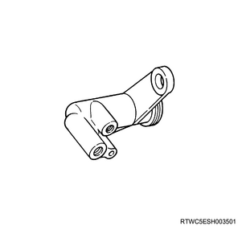
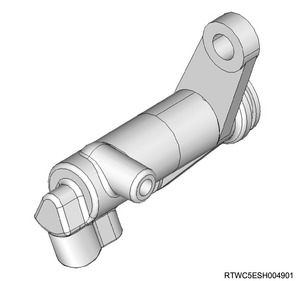
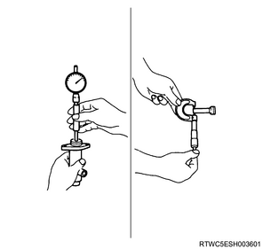

Clutch slave cylinder inspection (MUA)
1. Clutch slave cylinder inspection
Note
- Clean the cylinder body.
1. Inspect the cylinder body.
Note
- Visually inspect the fluid return port for clogging and clean it if necessary.
- The following applies to 2WD.

Note
- The following applies to 4WD.

2. Inspect the piston.
Note
- Visually inspect the piston and piston cup for worn, damage, etc.
- Replace the internal parts with a new repair kit A as shown in the diagram.

2. Clutch slave cylinder measurement
Note
- Clean the cylinder body and piston.
1. Measure the cylinder body using a cylinder gauge.
Note
- Measure the inner diameter.
2. Measure the piston using the micrometer.
Note
- Measure the outer diameter.

3. Calculate the clearance from measured value.
Note
- Subtract the cylinder body inner diameter from the piston outer diameter to calculate the clearance.
Standard： 0.07 mm { 0.0028 in }
Limit： 0.15 mm { 0.0059 in }
Note
- If the gap exceeds the limit for use, replace with the clutch slave cylinder assembly.